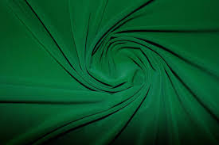

Зелений
Зеле́ний — один з трьох основних кольорів, зелений діапазон спектру з довжиною хвилі 500–565 нанометрів. Зелений — це четвертий колір веселки. У геральдиці — зелень. Широко розповсюджений у живій природі. Більшість рослин мають зелений колір, оскільки містять пігмент фотосинтезу — хлорофіл (хлорофіл поглинає більшу частину червоних променів з сонячного спектру, залишаючи для сприйняття відображений зелений колір). Зелений промінь — оптичне явище в атмосфері.